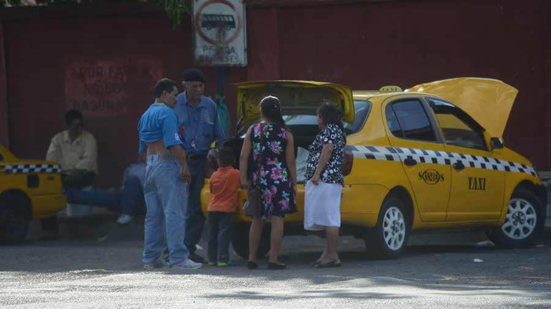

| Mientras que en la nueva terminal de Oriente, denominada “Plaza Amanecer”, los pasajeros eran recibidos
por personal que les orientaba para buscar su ruta de bus; en la vieja terminal los usuarios que
llegaban eran engañados por taxistas y otros quienes les decían que había paro de transporte. Muchos
usuarios a su llegada a la antigua instalación eran acosados por taxistas y personas que les ofrecían
transporte en pick up, a un costo de entre $10 y $15 por persona. |
 |
Alcaldías ofrecen becas para evitar cierre del Instituto Tecnológico de Usulután |
| Esperanza Flores, junto a su familia, llegó a la antigua terminal en búsqueda de un transporte que los pudiera llevar hasta Puerto El Triunfo.
“Aquí lo que nos están diciendo es que no están saliendo los buses y que no saben hasta cuándo van a trabajar normal. Para mí es nuevo lo de la otra terminal, aquí tenemos una hora de estar esperando y nadie nos da información”, dijo la usuaria. |
Marta Campos, otra usuaria de la terminal, explicó que también le dijeron los taxistas y transportistas de pick up que no estaban circulando los buses hacia San Miguel. “Este cambio nos afecta a nosotros porque queremos llegar a la casa y no sabíamos que ya estaba funcionando la nueva terminal”, dijo Campos, quien ya llevaba más de una hora esperando el autobús. |
Setenta jóvenes podrán aplicar a una beca de estudio en el Instituto Tecnológico de Usulután (Itu), a través del apoyo de seis alcaldías, que financiarán la formación superior de jóvenes de escasos recursos.
Luego de la publicación realizada por El Diario de Hoy, el pasado 31 de julio, sobre el riesgo en que se encontraba la institución de ser clausurada debido a la escasez de estudiantes y a los problemas de inseguridad en la zona, varias municipalidades comenzaron a gestionar esfuerzo para reactivar lo que consideran, un patrimonio de Usulután. |
De acuerdo con José Velásquez, director del Itu, actualmente las alcaldías que estarán otorgando becas para el próximo año son Santa María, Puerto el Triunfo, Ereguayquín, San Dionisio, El Tránsito y Concepción Batres.
“Empezamos a recibir llamadas y las municipalidades están muy interesadas en que la institución no se pierda, han confirmado seis alcaldías que nos estarán apoyando”, dijo Velásquez. |
El Itu que tiene como plazo límite hasta febrero del próximo año, para presentar como mínimo 60 estudiantes y no ser clausurado por el Ministerio de Educación (Mined); ellos espera tener inscrito 100 alumnos.
El director dijo que cada municipalidad se ha comprometido a entregar entre 10 a 15 becas a jóvenes que no puedan continuar sus estudios a nivel superior, por factores económicos.
Los requisitos que el estudiante debe de cumplir para se beneficiario son buen rendimiento académico, buena conducta y que sea escasos recursos económicos. |